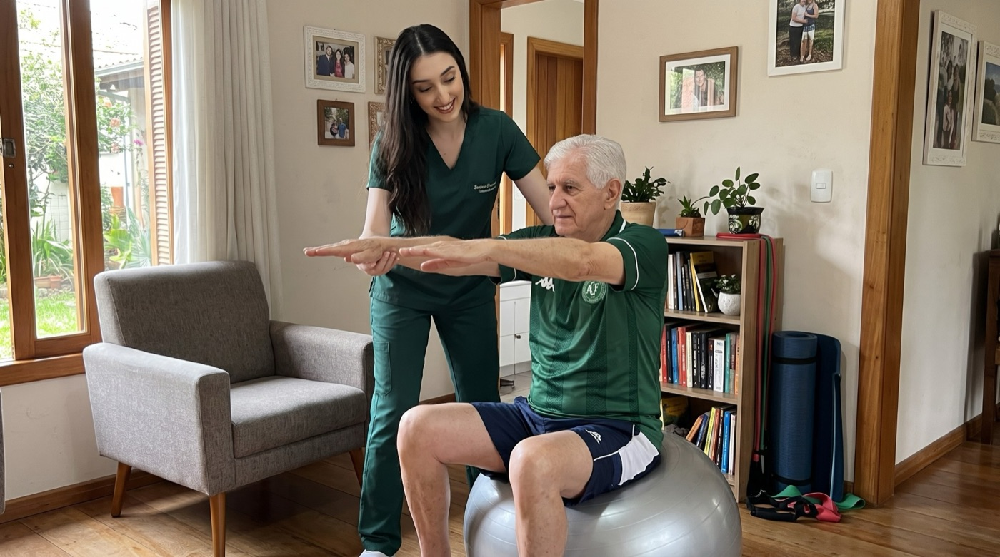
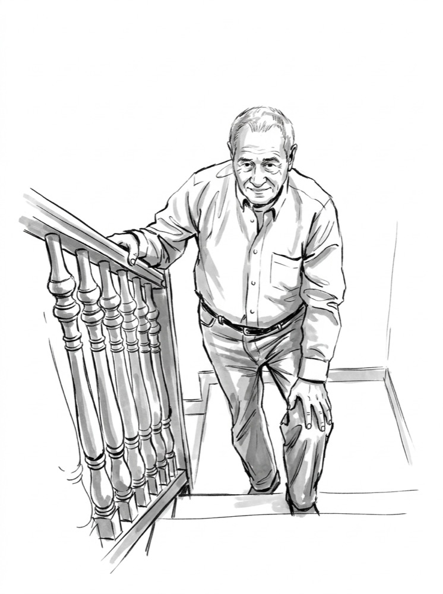
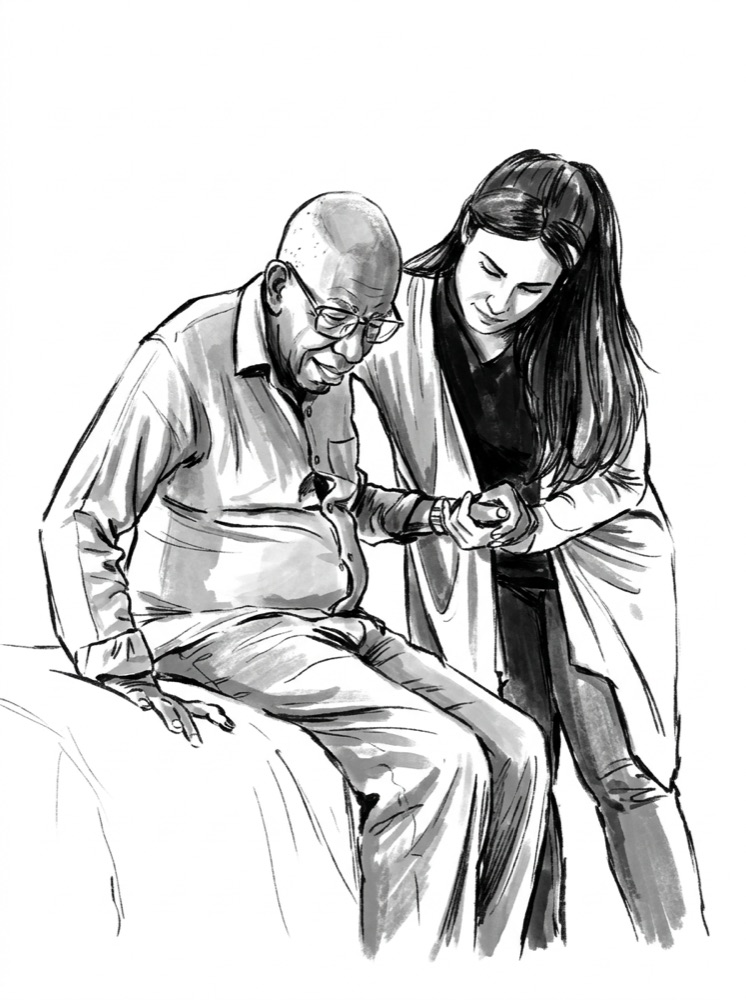
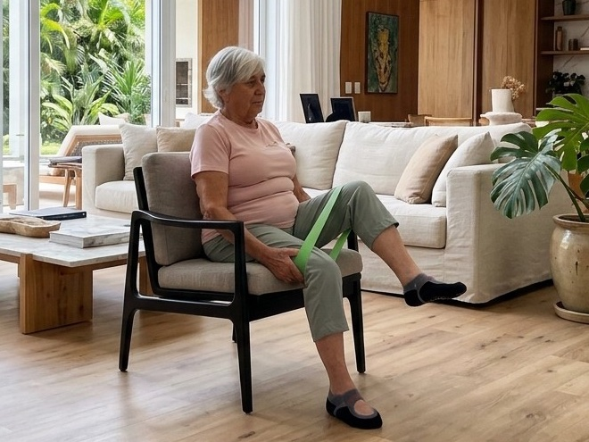

01Movimento e equilíbrio
- Prevenção de quedas
- Medo de cair
- Perda de equilíbrio
- Dificuldade para andar

Avaliação completa, plano individual e orientação para toda a família.
Agendar avaliação
Fisioterapeuta especializada no atendimento de idosos em casa. Meu trabalho é devolver segurança e autonomia, no tempo de cada paciente.
Passe o mouse ou toque em cada situação.

Perdeu força e se cansa com pouco esforço.
Agendar avaliação
Caiu e agora tem medo de andar sozinho.
Agendar avaliação
Não consegue mais fazer as coisas sozinho.
Agendar avaliaçãoVoltou para casa após AVC, cirurgia ou internação.
Agendar avaliaçãoForça, equilíbrio e coordenação para o idoso viver com mais segurança e independência, sem sair de casa.

01 02
02
03O idoso não sai de casa. Sem carro, escada ou sala de espera.
Treino na cama, no banheiro e na escada de casa.
Quem cuida recebe orientação a cada sessão.
Adaptações simples que reduzem o risco de quedas.
Chapecó · Santa Catarina
Fisioterapia domiciliar em toda Chapecó: Centro, Efapi, Passo dos Fortes, Presidente Médici, São Cristóvão, Jardim Itália, Santa Maria, Palmital, Maria Goretti, Líder, Jardim América, Universitário e demais bairros.
Agendar fisioterapia domiciliarO valor depende do tipo de atendimento e da frequência das sessões. Me chame no WhatsApp para receber os valores e entender qual plano faz sentido para o caso.
Não é obrigatório para iniciar. Mas, se o paciente tiver encaminhamento, exames ou relatório de alta, eles ajudam muito na avaliação.
Depende do caso. Na avaliação, eu indico a frequência ideal. Em geral, varia de 2 a 5 sessões por semana.
Não. Eu levo o material necessário para as sessões. Se for útil ter algum item em casa, eu oriento antes da compra.
Sim. O atendimento domiciliar é especialmente indicado para quem não pode sair da cama ou de casa.
Sob consulta. Me chame no WhatsApp para verificar a disponibilidade de horários no fim de semana.
Atendo em todos os bairros de Chapecó (SC), do Centro ao Efapi, Passo dos Fortes, Presidente Médici, São Cristóvão e demais regiões da cidade. A fisioterapeuta vai até a casa do paciente.
Na primeira visita, avalio força, equilíbrio, marcha, dor e o ambiente da casa. A partir disso, monto um plano de tratamento individual e oriento a família sobre os cuidados do dia a dia.